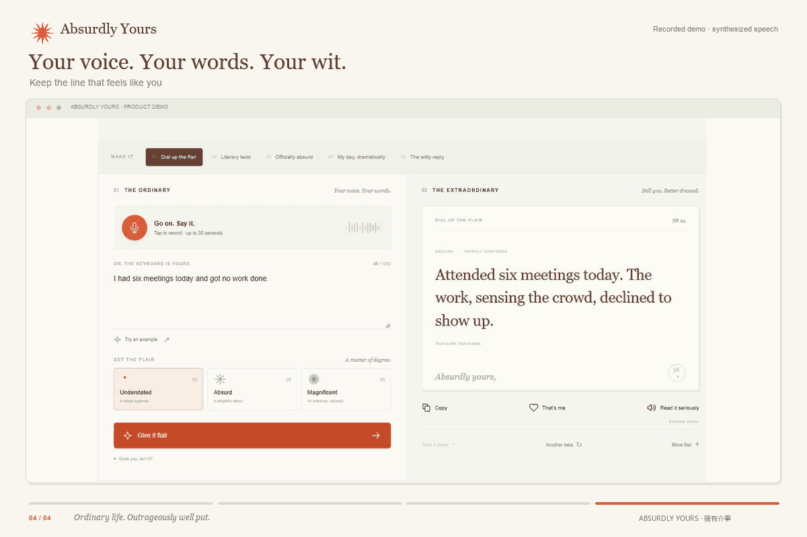
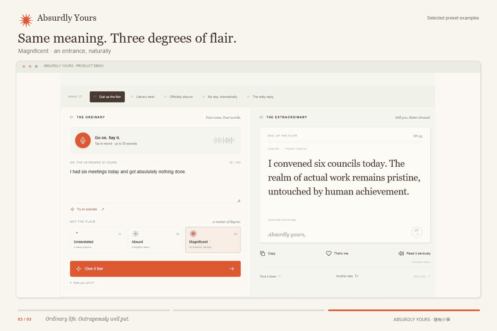
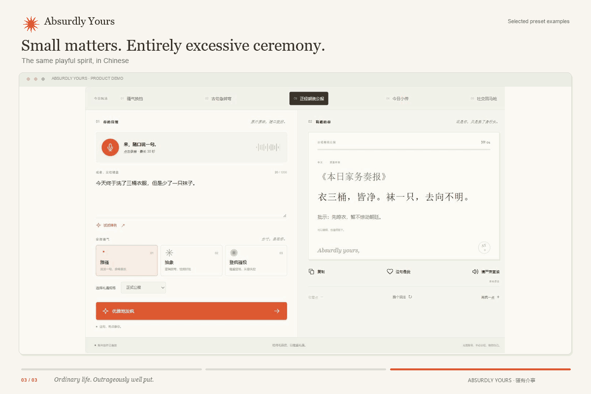

Speak first.
Record up to 30 seconds. Real speech recognition turns your voice into editable text before you choose what happens next.
A voice-first playground for your wonderfully unreasonable side. Turn daily frustrations, tiny triumphs and ordinary thoughts into lines that feel a little more like you.
English narration and captions. Best enjoyed with the volume up.
Open film in a new tab ↗This is a curated example, ready to explore. Your own speech and custom writing are available in the full app when connected to the cloud service.
Not every moment needs to become productive. Some deserve a raised eyebrow, an unreasonable amount of ceremony, and a little room for the person behind the to-do list.
Record up to 30 seconds. Real speech recognition turns your voice into editable text before you choose what happens next.
Five ways to play, from dry understatement to mock official bulletins. Three levels of flair. English and Chinese, written for each language.
Edit, copy, remember a favorite, or ask the system voice to read it with a straight face. Your meaning stays yours.
Recorded interface walkthroughs. The source includes the real voice → transcription → creation flow.



The full application runs locally with Next.js, React and server-side Alibaba Cloud Qwen APIs. Bring your own key for speech recognition and original creations; the built-in sample mode works without one.
Explore the source